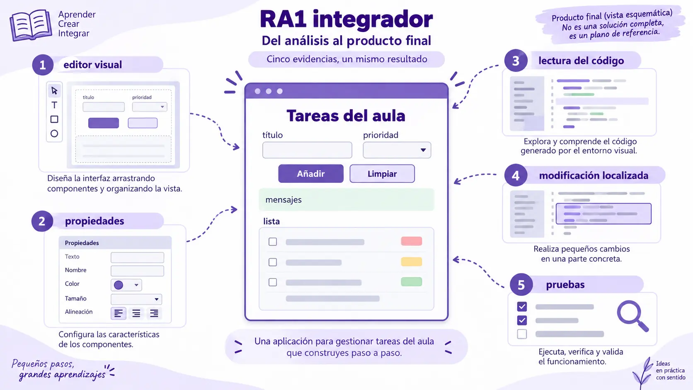

Contenido de la página
Evaluación integradora · 150 minutos · CE RA1.a–h.
Itinerario web generado con IA. Diseño de referencia: M3.
Situación
El centro necesita una pantalla para anotar tareas durante una sesión. Debe permitir introducir título, elegir prioridad Normal/Alta, añadir a una lista y limpiar el formulario. Los datos se conservan mientras la página permanezca abierta; no se exige persistencia, servidor ni autenticación.
Encargo
Utiliza las herramientas de Google para especificar, generar, explicar y refinar. Realiza operaciones de creación y ubicación en el editor visual web trabajado. No es necesario escribir código desde cero, pero debes identificar los fragmentos relevantes y explicar tus decisiones.

Requisitos obligatorios
- Una pantalla titulada «Tareas del aula».
- Título obligatorio: rechazar vacío y solo espacios; máximo 80 caracteres.
- Prioridad restringida a Normal o Alta, inicialmente Normal.
- Añadir conserva las tareas previas y muestra título y prioridad.
- Limpiar restaura el formulario sin eliminar las tareas.
- Mensajes claros y etiquetas visibles; funcionamiento con teclado.
- Estructura y estilos revisados contra M3. No se acepta como justificación únicamente «la IA dice que es Material».
- Una modificación posterior del código exportado por el editor que cambie la ayuda y su posición sin romper acciones.
Entregables
| Tarea | Entrega | CE |
|---|---|---|
| T1. Comparar dos herramientas y dos alternativas de componentes | Tabla con destino, encaje, limitación y elección; referencias | a |
| T2. Crear la interfaz en editor visual, desde bloques o estructura IA | Proyecto editable o registro de sesión y exportación | b |
| T3. Reubicar visualmente un bloque de etiqueta/control | Capturas antes/después o demostración; explicación de operación | c |
| T4. Configurar etiquetas, opciones, límite y valores iniciales | Tabla propiedad–requisito y resultado | d |
| T5. Leer estructura y relación con lógica | Cinco fragmentos anotados: contenedor, control, enlace, evento y actualización | e |
| T6. Pedir modificación de ayuda en la exportación | Antes/después, prompt, diferencias y prueba | f |
| T7. Asociar añadir y limpiar mediante IA | Manejadores identificados y pruebas | g |
| T8. Integrar y ejecutar | Archivo ejecutable o proyecto web e informe de pruebas | h |
No incluyas conversaciones completas: entrega los prompts y diferencias pertinentes. Si la herramienta produce nombres distintos, indica sus equivalencias.
Temporalización orientativa
| Trabajo | Minutos |
|---|---|
| Comparación y especificación | 15 |
| Creación, ubicación y propiedades en editor | 35 |
| Generación e integración de comportamiento | 35 |
| Lectura y cambio de exportación | 25 |
| Pruebas y entrega | 40 |
| Total | 150 |
Se parte de un entorno disponible y una estructura vacía; los accesos y preparación se realizan antes de la evaluación. Si una generación se bloquea, el docente puede facilitar una base parcial registrando la ayuda, sin dar por demostrados los criterios que resuelve esa base.
Casos de prueba mínimos
| Caso | Resultado esperado |
|---|---|
| Página recién abierta | Prioridad Normal y lista vacía |
| Título vacío o solo espacios | Rechazo, aviso claro y foco en el campo |
| Dos altas consecutivas | Conserva ambas tareas con su prioridad |
| Limpiar formulario | Restaura campos sin borrar la lista |
| Entrada con marcado HTML | Presenta texto literal, sin inyectar elementos |
| Cambio del texto de ayuda | Mantiene identificadores y acciones operativas |
| Uso completo con teclado | Campos, acciones y mensajes resultan accesibles |
| Recarga | Pierde los datos conforme al alcance declarado |
Guía de corrección por criterios
| CE | Satisfactorio | Insuficiente |
|---|---|---|
| a | Compara herramientas y librerías y justifica su encaje web | Enumera marcas sin análisis |
| b | Crea el documento con funciones del editor y conserva evidencia | Solo aporta una captura o copia la solución |
| c | Reubica componentes mediante el editor y demuestra la operación | Solo pide un diseño a la IA |
| d | Configura propiedades vinculadas a requisitos comprobables | No identifica los cambios realizados |
| e | Localiza y explica fragmentos de su propia exportación | Repite una explicación de IA sin localizarla |
| f | Modifica la exportación, conserva versiones y verifica | Cambia código sin procedencia ni prueba |
| g | Añadir y limpiar están asociados y probados | Las acciones no funcionan o no se identifican |
| h | La aplicación completa es ejecutable y supera los casos esenciales | La interfaz no está integrada o no se ejecuta |
Solución docente orientativa
La solución siguiente es una referencia generada, no el resultado de una sesión grabada del editor. Sirve para corregir comportamiento, lectura y diseño; T2/T3 necesitan además las evidencias del alumno. Se admite otra implementación si satisface los requisitos.
T1: decisión de referencia
Stitch ayuda a explorar el diseño y Gemini/AI Studio a generar y refinar. GrapesJS aporta edición visual web y exportación. La comparación distingue herramienta y librería usando el capítulo 02. Para esta referencia pequeña se emplean controles nativos HTML y CSS con roles inspirados en el sistema M3; no hay librería externa. La comparación puede considerar Material Web como alternativa, incluyendo su mantenimiento. HTML no se describe como una librería externa.
La ausencia de dependencias facilita leer esta muestra; el coste es que hay que revisar explícitamente todos los estilos y estados. No se proclama una certificación M3 completa por usar los nombres de tokens.
T2–T4: estructura visual
Orden final: encabezado, entrada, selector, ayuda, acciones, mensaje y lista. El editor puede generar clases adicionales; los identificadores de lógica deben mantenerse o actualizarse consistentemente. Los controles tendrán asociación for/id, límite 80 y valores de prioridad coherentes.
T5–T7: especificación de generación
Genera la lógica para mi HTML exportado sin sustituir su estructura.
Respeta estos ids: formulario, titulo, prioridad, ayuda, limpiar, mensaje, lista.
Usa una colección en memoria. Rechaza vacío, espacios y más de 80 caracteres.
Añade título y prioridad con textContent, conservando las tareas previas.
Limpiar no borra la lista. Usa submit para añadir y click para limpiar.
Explica datos, función de representación y asociaciones. Mantén el tema M3.
Después muestra pruebas concretas; distingue pruebas propuestas y ejecutadas.Cambio T6 de referencia: en la versión inicial la ayuda dice «Completa los datos» después de las acciones. Pedir «mueve ayuda antes de las acciones y cambia su texto a “Título de 1 a 80 caracteres. Los datos se conservan durante esta sesión”. Conserva todos los ids». La solución final ya incorpora ese cambio. El antes/después real debe conservar la exportación del alumno, no reconstruirse a posteriori desde la solución.
Archivo de referencia completo
El profesor puede guardar el contenido de este bloque como tareas.html y abrirlo en un navegador. Es un recurso docente reproducible, no un ejercicio de transcripción para el alumno. No realiza peticiones externas. Al recargar pierde los datos, tal como exige el alcance.
<!doctype html>
<html lang="es">
<head>
<meta charset="utf-8">
<meta name="viewport" content="width=device-width, initial-scale=1">
<title>Tareas del aula</title>
<style>
:root {
color-scheme: light;
--md-sys-color-primary: #6750a4;
--md-sys-color-on-primary: #ffffff;
--md-sys-color-surface: #fffbfe;
--md-sys-color-on-surface: #1c1b1f;
--md-sys-color-surface-container: #f3edf7;
--md-sys-color-outline: #79747e;
--md-sys-color-error: #b3261e;
}
* { box-sizing: border-box; }
body { margin: 0; background: var(--md-sys-color-surface); color: var(--md-sys-color-on-surface); font: 400 16px/1.5 Arial, sans-serif; }
main { max-width: 680px; margin: 32px auto; padding: 24px; }
h1 { font-size: 32px; line-height: 1.25; font-weight: 400; margin: 0 0 8px; }
h2 { font-size: 24px; font-weight: 400; }
.intro, .ayuda { margin: 0 0 24px; }
form { display: grid; gap: 16px; }
.campo { display: grid; gap: 8px; }
label { font-size: 14px; font-weight: 600; }
input, select { width: 100%; min-height: 56px; border: 1px solid var(--md-sys-color-outline); border-radius: 4px; padding: 12px 16px; background: transparent; color: inherit; font: inherit; }
input[aria-invalid="true"] { border: 2px solid var(--md-sys-color-error); }
.ayuda { font-size: 14px; margin: 0; }
.acciones { display: flex; flex-wrap: wrap; gap: 12px; }
button { min-height: 48px; padding: 10px 24px; border-radius: 999px; font: 600 14px/20px Arial, sans-serif; cursor: pointer; }
.primario { border: 1px solid transparent; background: var(--md-sys-color-primary); color: var(--md-sys-color-on-primary); }
.secundario { border: 1px solid var(--md-sys-color-outline); background: transparent; color: var(--md-sys-color-primary); }
button:hover { box-shadow: inset 0 0 0 100px rgb(0 0 0 / 8%); }
button:active { box-shadow: inset 0 0 0 100px rgb(0 0 0 / 12%); }
:focus-visible { outline: 3px solid var(--md-sys-color-primary); outline-offset: 3px; }
#mensaje { min-height: 24px; margin: 0; }
#mensaje.error { color: var(--md-sys-color-error); }
ul { list-style: none; padding: 0; display: grid; gap: 12px; }
li { background: var(--md-sys-color-surface-container); border-radius: 12px; padding: 16px; overflow-wrap: anywhere; }
@media (max-width: 480px) { main { margin: 0; padding: 16px; } }
</style>
</head>
<body>
<main>
<h1>Tareas del aula</h1>
<p class="intro">Anota las tareas de esta sesión.</p>
<form id="formulario" novalidate>
<div class="campo">
<label for="titulo">Título</label>
<input id="titulo" name="titulo" type="text" maxlength="80" required aria-describedby="ayuda mensaje">
</div>
<div class="campo">
<label for="prioridad">Prioridad</label>
<select id="prioridad" name="prioridad">
<option value="normal" selected>Normal</option>
<option value="alta">Alta</option>
</select>
</div>
<p id="ayuda" class="ayuda">Título de 1 a 80 caracteres. Los datos se conservan durante esta sesión.</p>
<div class="acciones">
<button class="primario" type="submit">Añadir tarea</button>
<button class="secundario" id="limpiar" type="button">Limpiar formulario</button>
</div>
<p id="mensaje" role="status" aria-atomic="true"></p>
</form>
<h2 id="encabezado-lista">Tareas añadidas</h2>
<p id="vacio">Todavía no hay tareas.</p>
<ul id="lista" aria-labelledby="encabezado-lista"></ul>
</main>
<script>
const tareas = [];
const formulario = document.querySelector('#formulario');
const titulo = document.querySelector('#titulo');
const prioridad = document.querySelector('#prioridad');
const mensaje = document.querySelector('#mensaje');
const lista = document.querySelector('#lista');
const vacio = document.querySelector('#vacio');
const nombresPrioridad = { normal: 'Normal', alta: 'Alta' };
function informar(texto, error = false) {
mensaje.textContent = texto;
mensaje.classList.toggle('error', error);
}
function representarTareas() {
lista.replaceChildren();
for (const tarea of tareas) {
const fila = document.createElement('li');
fila.textContent = `${tarea.titulo} — Prioridad: ${nombresPrioridad[tarea.prioridad]}`;
lista.append(fila);
}
vacio.hidden = tareas.length > 0;
}
function limpiarFormulario() {
formulario.reset();
titulo.removeAttribute('aria-invalid');
informar('');
titulo.focus();
}
function agregarTarea(evento) {
evento.preventDefault();
const texto = titulo.value.trim();
if (!texto || texto.length > 80) {
titulo.setAttribute('aria-invalid', 'true');
informar('Escribe un título de 1 a 80 caracteres.', true);
titulo.focus();
return;
}
if (!Object.hasOwn(nombresPrioridad, prioridad.value)) {
informar('Selecciona una prioridad válida.', true);
prioridad.focus();
return;
}
tareas.push({ titulo: texto, prioridad: prioridad.value });
representarTareas();
limpiarFormulario();
informar(`Tarea añadida. Total: ${tareas.length}.`);
}
formulario.addEventListener('submit', agregarTarea);
document.querySelector('#limpiar').addEventListener('click', limpiarFormulario);
representarTareas();
</script>
</body>
</html>Lectura guiada resuelta
| Parte | Función | Qué debe explicar el alumno |
|---|---|---|
:root |
Roles de tema | Los colores tienen propósito; los nombres no certifican por sí solos M3. |
label for / input id |
Asociación de campo | La etiqueta identifica la entrada. |
tareas |
Origen en memoria | Los datos no son los elementos li. |
representarTareas |
Transformación y representación | Limpia la representación, recorre los datos y crea texto seguro. |
agregarTarea |
Validación y alta | Detiene envío, valida, añade, actualiza y comunica. |
limpiarFormulario |
Restablecimiento | No modifica el array; reset restaura prioridad Normal. |
Dos addEventListener |
Asociaciones | Cada acción se registra una vez. |
La estructura inicial del alumno puede variar. En lectura se pide localizar equivalencias, no recitar estos nombres.
Pruebas y resultados de referencia
| Caso | Resultado esperado |
|---|---|
| Página recién abierta | Lista vacía, prioridad Normal, aviso de ausencia de tareas. |
| Título vacío o espacios | Aviso y foco; cero altas nuevas. |
| «Leer», Normal | Una fila correcta y total 1. |
| «Revisar equipo», Alta | Segunda fila; se mantiene la primera. |
| Limpiar con campos modificados | Título vacío, prioridad Normal; filas intactas. |
Título con marcado como <b>Leer</b> |
Se presenta literalmente; no crea elementos b. |
| Llamar dos veces a representación | No duplica la lista. |
| Título superior a 80 mediante asignación programática | Rechazado también por la lógica. |
| Recarga | Se pierden los datos; es el alcance declarado. |
| Cambio T6 | Ayuda antes de acciones; identificadores y funcionalidad conservados. |
El informe de verificación del paquete distingue comprobación de lógica y revisión visual. Un test de JavaScript no demuestra foco visible, lector de pantalla ni conformidad M3 integral.
Diseño y límites
La solución usa roles de color, jerarquía y diferenciación de acciones siguiendo la referencia M3. Emplea controles HTML con una adaptación didáctica; el selector conserva su comportamiento nativo y no se presenta como reproducción exhaustiva de todos los componentes M3. Antes de usarla como ejemplo visual definitivo se revisarán foco, estados, contraste, tipografía, tamaños y distribución en navegador. No se ha declarado una auditoría completa de M3/WCAG.
No se necesita Android Studio. No hay servicios externos ni persistencia. Los scripts son ejemplos completos de salida de IA para el docente; el alumno dirige, identifica y verifica.
Preguntas de defensa
- ¿Qué diferencia existe entre la herramienta de edición y la librería utilizada?
- ¿Qué operación realizaste en el editor para cambiar la distribución?
- ¿Qué fragmento conecta el evento con la acción y cómo lo comprobaste?
- ¿Qué cambió en la exportación y qué evidencia demuestra que no se rompió la interfaz?
- ¿Qué decisión de la IA rechazaste o corregiste y por qué?